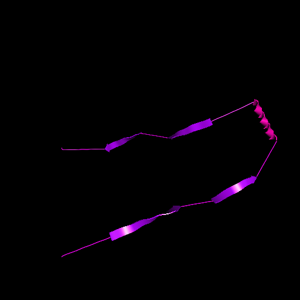
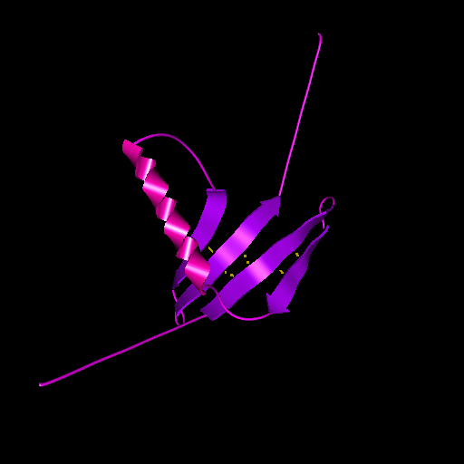

This section gives a description of the purpose and capabilities of the BuildBeta function, with explanations of the values that can be changed to affect its behavior, either lower case variables in the ProteinShop.cfg file, or upper case #defined constants in the source code.
Although the zipping functions in ProteinShop can move two beta strands next to each other in a parallel or antiparallel configuration, the user must first identify two zipping residues in the respective strands that should be hydrogen bonded together, in order to specify their alignment. The zipping function then determines the rigid body motion of one strand with respect to the other that achieves the requested hydrogen bonds, and uses inverse kinematics to adjust the flexible coils in order to achieve this motion. Building beta sheets still requires substantial human effort in selecting and indicating the zipping residues. The BuildBeta function attempts to automate this process, in order to generate an ensemble of plausible and likely initial configurations with one beta sheet, using all the predicted beta strands in the chain.
Its input may be the output of a prediction server (a .pred file), which for each residue, predicts the secondary structure type as belonging to a coil, alpha helix, or beta strand, and also gives a confidence estimate for each prediction. The input may also be an existing PDB structure file (a .pdb file), which has been annotated with remarks identifying the regions with these three sorts of structure. BuildBeta then uses probabilities for beta sheet topologies and matching alignments generated from their frequencies in known proteins to decide automatically how to call the zipping functions to form the beta sheets.
The probabilities of the different strand topologies in a sheet are taken from Ruczinski et al. [Ruc02]. The two components to a topology are the order of the strands in the sheet, and the orientations of each strand (up or down), which determines whether adjacent strands are parallel or anti-parallel. To avoid redundant topologies, the structures always have the first strand in the chain in the first (left) half of the sheet, and the left-most strand of the sheet oriented up. Therefore a beta sheet of n strands has 2nn! /4 = 2n-2n! possible topologies. Their relative probability scores were tabulated in [Ruc02], depending on whether the structure is alpha/beta (more than 20% residues in an alpha helix) or "all beta", and the length of the coils between strands: "short" if ten or less residues, and "long" otherwise. The scores are in the source code for n = 2, 3, and 4, and are read in from the file binaryPpJ.out for n from 5 through 10. (These statistics are not available for more than 10 strands, due to the sparsity of such sheets in known proteins, so BuildBeta can handle only sheets of 10 strands or less.) The 2n-2n! possible topologies are exhaustively generated and scored. Those with the best scores are further analyzed for good strand alignments.
The various alignments are generated by sliding a strand along an adjacent strand to change which residue pairs are opposite each other. The relative probabilities for the different alignments of two beta strands are taken from Zhu and Braun [Zhu99]. This paper contains three twenty-by-twenty matrices for the potential energy of pairs of residues, one from each strand, either (a)opposite to each in the alignment, (b) separated by one residue (diagonally opposite), or (c) separated by two residues (second diagonal). These matrices were generated from the statistics of actual alignments in a training set of known structures. When these energies are added for all pairs of types (a), (b), or (c) in a proposed alignment, they produce a score for the alignment, with lower scores being more probable. Zhu and Braun report that for a set of test proteins of known structure, separate from the training set, the actual alignment was among the best three scoring alignments in 73% of the cases. The number of best scores we consider for each adjacent pair of strands is a constant called THREE, which can be changed only at compile time, because it effects the fixed array sizes. In a sheet with n strands, there are THREE n-1 choices of one of the best THREE scores for each of the n-1 adjacent pairs, and for each of these, the total energy scores are added, and a continually updated collection of the best FOUR (another source code constant) total alignments is found.
The zipping for a proposed topology and alignment is performed from left to right in the sheet. For each pair of adjacent strands, a zipping pair of residues is chosen at the center of the strand overlap region in the alignment, or nearby, if one of the center residues is a proline without an amide hydrogen, and the zipping function is called. If it fails to converge, the proposed alignment is rejected.
Each alignment can be realized in one of two sideways-flipped orientations, depending on whether the amide hydrogen bond on the residue selected for zipping points to the strand on its right, to which it is to be aligned, or the strand on its left, with which it has already been aligned. (See figure 8 in Zhu and Braun [Zhu99].) The scores of Zhu and Braun do not distinguish between these two cases. Therefore every topology/alignment proposed is tried twice, with each of these two possibilities for the alignment between the first and second strands in the sheet. Once this choice is made, it determines which amide hydrogens are free for bonding between the second and third strands, and so forth, so there are only 2 flipping cases to consider, not 2n-1.
The inverse kinematics for the zipping will fail to converge if the flexible coils between the new moving strand and the already aligned part of the structure are too short. Many or even all of the attempted best scoring structures may not be successfully constructed. We have several solutions to this problem. The first is to simply attempt more different topologies and/or alignments. The number of attempted alignments for each adjacent pair can be increased by changing the constant THREE in the source, and the number of total alignments considered for each topological structure can be increased by changing the constant FOUR in the source. In addition, it is likely that the set of FOUR best total scores will contain many or all entries with one particularly good scoring alignment for a specific adjacent strand pair, and if this particular alignment cannot be constructed by the zipping functions, there may be no representative constructed for that topology. To reduce this possibility, there is another constant in the source, TWO, for the maximum number of times an alignment for any specific pair of adjacent strands can appear in the best FOUR chosen. If a new proposed total alignment would make more than TWO of the best FOUR have the same alignment for any specific adjacent strand pair, only the best TWO are retained. The above variables can be made larger to increase the number of candidates tested by attempted zipping, but if the success rate is high, this may result in too many output files. This there is another source code constant ALIGNMENTS which is the maximum number of successfully built total alignments that should be attempted per topology. Once this number has been reached, zipping attempts for the current topology are abandoned.
There is also source code constant FIVE, for the number of topologies to consider for three strands. For two strands, only two topologies are considered, and for four strands, a variable number are considered, which depends on the coil lengths, and is taken from a table. For five or more strands, the number of topologies considered is taken from the variable called try_topologies in the ProteinShop.cfg file. Since storage for the topologies is created at compile time, there is a source code constant MAXTOP , which try_topologies cannot exceed. The topologies are considered for zipping in order of decreasing Ruczinski score. For each topology, the number of successfully built alignments is tallied, and if this exceeds the source code constant FIND_PER_TOPOLOGY, a topology success count is incremented. When this count exceeds the variable called enough_topologies in ProteinShop.cfg, BuildBeta returns. Thus the number of structures produced can be limited, while still attempting many more (try_topologies) to account for that fact that all proposed zipping alignments may fail for some of those tried.
The second solution for zipping failures is to increase the length of the coils by adding the residues in the predicted strands that do not participate in hydrogen bonding with either the strand to their left or their right, because the proposed alignment places them beyond the ends of both of these adjacent strands. If we make such a strand shortening residue type change in the predicted secondary structure, we increase the Zhu and Braun alignment score by the variable called strand_to_coil_penalty in ProteinShop.cfg, multiplied by the confidence of the residue's structure type prediction from the prediction file, to penalize for the change. (If the input was a structure-annotated PDB file instead of a prediction file, all the confidences are set to 5.) If the variable called shorten in ProteinShop.cfg is set to 1, this strand shortening will be done, and if zero, it will not.
Even with this increased flexibility, the coils may not be long enough to permit a proposed alignment. So a third strategy is to test in advance for constructibility while selecting the best scoring alignments, which is done if the variable test_zip in the ProteinShop.cfg file is set to 1. Since the zipping functions are iterative, and numerically intensive for longer coils, it is impractical to test the constructibility of the two flip orientations for each of the THREE n-1 alignments for every proposed topology. Instead, for each topology, every alignment for each adjacent pair of strands is attempted by the zipping functions, for each of the two possible strand flip orientations, and only those that converge for both orientations are included in the best THREE choices for that strand pair. Because this is done for each pair in isolation, in order to make the amount of work linear instead of exponential in n, the alignments of the two strands on the other sides of pair being considered are not known, the coils cannot be lengthened and the strands shortened as discussed in the second solution above.
| (a)  (b)  |
| Figure 1: (a) A structure created from a prediction file. (b) A successfully constructed structure. |
The successfully constructed structures are output as PDB files, with long names containing a string from the input prediction or PDB input file name, a unique integer counting from 1 for listing them in order of creation, the up-down orientation of the strands, the order of the strands in the sheet, the first strand pair's flip orientation, the number of predicted beta residues converted to coil structure, the topology score, and the Zhu and Braun alignment score. For example, the name might be T2.20.up10010.pos12340.od1.short2.IngoScore0.011924.ZhuEnergy595.00.pdb.Thus the information necessary to decide which structures should included in the ensemble for energy minimization can be seen from the filenames, without opening the files.
Sometimes the structure of a core part of a protein is determined by homology with a known structure, and the task is to extend a sheet in the core by placing the remaining beta strands. In this case, BuildBeta uses a PDB structure file with the core regions in the chain identified by remarks. The beginning of a core region is indicated in the PDB file by the line
REMARK BEGINCORE
and the line
REMARK ENDCORE
indicates the end of a core region.
BuildBeta then also takes a prediction file with the structure predictions and confidences. This can be specified by the command line
ProteinShop pdbfilename.pdb extra predictionfilename.pred
with they keyword extra separating the two file names or by the menu item BuildBeta under the menu Tool. Then, when generating and scoring proposed sheet topologies, BuildBeta only considers those where the core regions matches the topology in the given structure. It only proposes alignments for the beta strands outside the core regions. When it does the zipping, it only marks as flexible the coil regions outside the fixed core. Thus all structures produced will contain the input core region. The current version of BuildBeta can only construct a single beta sheet, so we can only match cores with at most sheet. There may be multiple core stretches specified in the sequence, but their union will be treated as a single rigid body. The topology of the single beta sheet in the core region is identified by testing for hydrogen bond geometry between beta strands inside the core regions.
When beta sheets are built with this automatic zipping, they may intersect coils and alpha helices that were poorly placed by the inverse kinematics routine, which makes no use of contact forces or potential energy computations. If the variable move_helices in the ProteinShop.cfg file is set to 1, BuildBeta makes an attempt to move at least the alpha helices away from the beta sheet. For each pair of beta strands which are consecutive along the chain, any intervening alpha helices are moved to the side of the sheet that would produce a right hand turn according to the definition of Richardson [Rich76]. An average plane for the region of the sheet between the two beta strands is computed from the planes of the zipped hydrogen bond pairs, and a position for the first intervening helix is selected which is parallel to this plane, at a preset distance called spacing in the ProteinShop.cfg file, chosen to avoid overlap with the sheet. Its remaining degrees of rigid body freedom are chosen to make it close to the line joining the endpoints of the two strands that it is topologically connected to. Further helices intervening between the same two strands are placed at successively larger multiples of spacing from the plane.
The inverse kinematics routines are called to move each of these helices to the specified position, leaving fixed those that have already been placed. If the coil regions selected as movable are not flexible enough for all the specified helix movements, a PDB file without the helix motions will still be output. No attempt is made to move the coils, which may still intersect other structures, but energy minimization should be able to fix this. The current versions of the inverse kinematics routines do not always keep both anchors fixed when moving a helix that has other secondary structure on either side of it, so the adjusted helix structures may not preserve the beta sheets. So for now, their output file names have an additional string “movehelices” inserted into their names, just after the filename taken from the input .pred or .pdb file, rather than overwriting the file produced before the helix moves are attempted, as originally planned.
The beta sheets are constructed from the .pred file input using nominal values for the main chain dihedral angles phi and psi taken from the middle of the beta strand scatter in the Ramachandran plot. The twist in the strand that this produces sometimes means that when the zipping functions match hydrogen bonds for a pair of central residues in two adjacent strands, other potential hydrogen bonds further away from the center will not be matched. One solution to this is to flatten the strands with values of phi and psi that remove all the twist, so that the hydrogen bonds all lie in the same plane. If the variable called flatten in the ProteinShop.cfg file is set to 1, the shortened beta strands will all be flattened. However, it is usually not necessary to fully flatten the beta strands, so there is also a variable called flat_frac in the ProteinShop.cfg file, which specifies an interpolation fraction between the nominal beta sheet values of the dihedral angles and their values for full flattening. When it is 1, full flattening is done, and when it is 0, no flattening is done and the nominal beta strand angles are used.
The actual energy-optimal main chain dihedral angles depend on sequence, strand length, and beta sheet topology. Approximations that are independent of sequence but at least take account of the presence of the beta carbon in the side chain can be found by considering polyalanine. For each strand length, and each up/down choice for the two neighboring strands (i. e. parallel or antiparallel) a structure with three identically configured polyalanine chains, consisting of a central strand and its two adjacent neighbors was optimized using the following 20 degrees of freedom: 6 degrees for the rigid body position of each of the two neighbor chains with respect to the central one, 4 degrees of freedom for the four dials labeled curl, twist, pleat, and braid in the ProteinShop Structure Dialog window, which allow for all period 2 periodic variation in phi and psi, and quadratic versions of these four dials, whose effect increases quadratically with distance from the strand centers, to account for the increasing distance between the strand backbones if they diverge from being exactly parallel or antiparallel.
The eight dials had the same effect on all three strands, so the energy being optimized is actually a per-strand value for an infinite beta sheet, either all parallel, all anti-parallel, or alternating parallel and anti-parallel. The optimal phi and psi dihedral angles found were stored in a file Alanine_Optimize_Angles which is read in by the initialization routine initBuild. If the ProteinShop.cfg variable called optimized_angles is 1, these values are used instead of these specified by flatten and flatfrac.
The current optimization was for the same strand length on all three polyalanine chains, and is actually not appropriate for the situation where they are not the same length, and/or the chosen strand alignment does not put the central hydrogen bonds at the same position for the zipping of the strand with its two neighbors. This is because the optimized angles are position dependent, due to the quadratic versions of the dials. So use of this feature is not advised until the optimization can be repeated without the four quadratic dials.
The execution of BuildBeta can be time consuming, so there are varying degrees of interactivity permitted. Normally, when started with an input file from the command line or the File menu, ProteinShop is in interactive mode. In that case, BuildBeta can be called by pressing the d key with the cursor in the display window. When it returns to interactive mode, the last of the constructed structures will be shown on the screen. For debugging purposes, it may be useful to examine other structures as they are being created. If the variable called interact in the ProteinShop.cfg file is greater than zero, BuildBeta queries the user in the command line window after each structure is created, or even more often if interact is greater than 1. If the user replies with the character r in the command line window, BuildBeta returns immediately to interactive mode, and the current state of the structure can be examined interactively. After this interaction, it is impossible to go back to the same point in BuildBeta computations. Instead, BuildBeta must be restarted from the beginning by typing another d in the display window. Note that the results of the zipping function depend on the initial configuration, so the results may not be the same if the initial structures are different.
Sometimes, for example when submitting batch jobs to start automatically, it may be desirable to initiate the BuildBeta structure construction entirely from the command line, without ever entering the interactive mode. If the variable called offlineBuildBeta in the ProteinShop.cfg file is set to 1, BuildBeta will be called directly from the command line, without opening the ProteinShop interactive display window, and therefore without any graphics calls.
References
[Zhu99] Hongyao Zhu and Werner Braun "Sequence specificity, statistical potentials, and three-dimensional structure prediction with self-correcting distance geometry calculations of beta-sheet formation in proteins", Protein Science Vol. 8 (1999); pp. 326 - 342.
[Ruc02] Ingo Ruczinski, Charles Kooperberg, Richard Bonneau, and David Baker "Distributions of beta sheets in proteins with applications to structure prediction", Proteins: Structure, Function, and Genetics Vol. 48 (2002) pp. 85 - 97.
[Rich76] Jane Richardson, "Handedness of crossover connections in beta sheets", Proc. Natl. Acad. Sci. USA Vol. 73, No. 8 (1976) pp. 2619 - 2623.